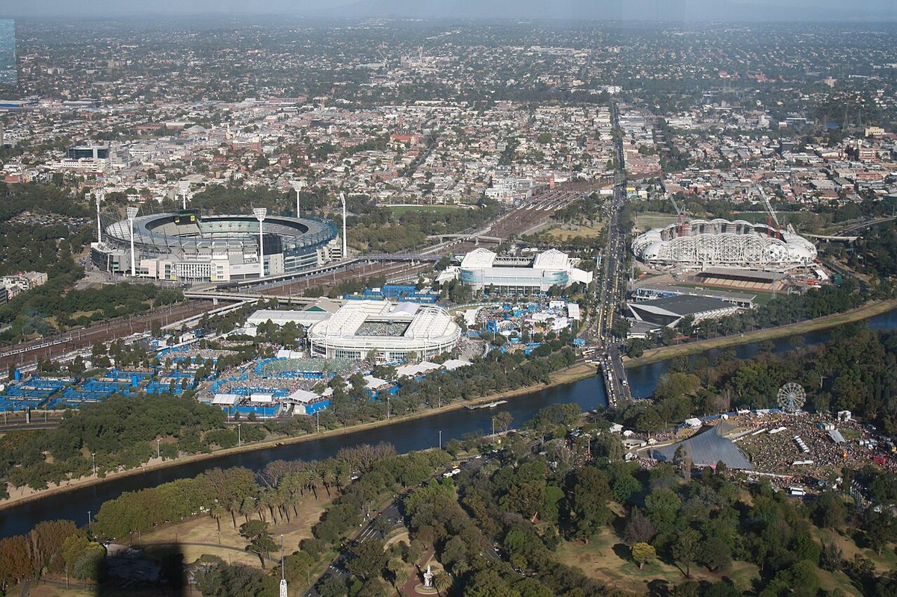

右膝术后恢复不及预期，双届赛会冠军辛纳宣布退出2027年澳网
澳大利亚网球协会证实，这位两届墨尔本公园得主将缺席明年1月的大满贯，继续专注于伤病康复。

澳大利亚网球协会于2026年11月26日（星期四）官方证实，赛会两届男单冠军扬尼克·辛纳（Jannik Sinner）因处于右膝手术康复期，将无缘2027年澳大利亚网球公开赛。现世界排名第二、25岁的意大利名将早在10月便宣布提前结束2026赛季以治疗膝关节炎症，并于本周早些时候接受了手术治疗。
澳大利亚网球协会首席执行官安德鲁·阿卜杜（Andrew Abdo）正式确认了辛纳退出本届澳网的消息。2027赛季首项大满贯赛事定于1月17日在墨尔本公园挥拍开打。
“我们一直与扬尼克的团队保持着密切沟通，他们已确认，鉴于刚刚接受的手术，扬尼克将无法参加明年1月的澳网，”阿卜杜在接受美联社采访时表示，“扬尼克非常热爱在墨尔本比赛，他十分期待在2028年重返澳网赛场。我们衷心祝愿他康复顺利，并期待尽快看到他重返赛场。”

难耐保守治疗终动刀，远离巡回赛已数月
此前在11月24日（星期二），辛纳对外宣布，在保守治疗未能彻底痊愈后，他接受了一次右膝“微创”手术。自2026年7月在温网成功卫冕、斩获个人职业生涯第五座大满贯男单冠军奖杯以来，这位意大利球星就再也没有参加过任何一场ATP巡回赛。
他的经纪团队在10月即确认辛纳将缺席2026赛季剩余的所有比赛。这也是辛纳在两个赛季内遭遇的第二次长期休赛——此前在2025年，他曾因与世界反兴奋剂机构（WADA）达成协议而接受了为期三个月的停赛禁令。
“眼下我必须严格遵守康复流程，因为如果操之过急，可能会引发更严重的隐患，”辛纳在11月上旬于米兰举行的新闻发布会上坦言。长时间的高挂免战牌，也让他丢掉了世界第一的宝座，榜首位置被德国名将亚历山大·兹维列夫取而代之。

墨尔本福地战绩
墨尔本公园见证了辛纳职业生涯中的多座里程碑。2024年，他在决赛中经过五盘鏖战击败丹尼尔·梅德韦杰夫，捧起职业生涯首座大满贯金杯；2025年，他在决赛中战胜兹维列夫成功卫冕；2026年，他在半决赛中不敌诺瓦克·德约科维奇。
在七次澳网征程中，辛纳取得了27胜5负的战绩，胜率为84%。已取代他登上世界第一的兹维列夫，将以世界第一的身份出征墨尔本。